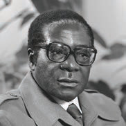
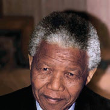
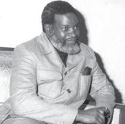

Kuna Robert Mugabe, Zimbabwe akainua,
Akatangaza ubabe, walowezi kuwang’oa,
Usia wao tubebe, mkoloni kumtoa,
Uhuru wa Afrika, Zimbabwe wafurahia.

Musa
Sioni walokifanya, hao nilowabaini,
Hata nguvu ngekusanya, singeshinda wakoloni,
Mali nyingi likusanya, Afrika maskini,
Hiari waliamua, kutupatia uhuru.
Tunu
Mandela kafanya kazi, imara bila ajizi,
Kweli alipiga mbizi, kutafuta mageuzi,
Alipinga ubaguzi, kwa hasira ya mkizi,
Afrika ya Kusini, uhuru wafurahia.

Musa
Sasa nimekuelewa, juhudi za viongozi,
Elimu kubwa tolewa, na Nujoma kiongozi,
Namibia piganiwa, Afrika mapinduzi,
Tanzania hakubaki, nao pia lishiriki.

Tunu
Kuna kambi ya Mazimbu, Morogoro ilikaa,
Nayo Kongwa kumbukumbu, ukombozi ilizaa,
Bado kuna kumbukumbu, kule Chunya walikaa,
Tanzania kuongoza, ukombozi Afrika.
Nachingwea walikaa, Msumbiji walotoka,
Mreno walikataa, kwa mapanga na mashoka,
Vita ikatapakaa, mkoloni kapigika,
Nchi zote za kusini, msaada tulitoa.